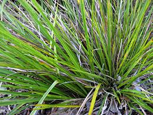

Cabbage Tree - [Cabbage Palm;
Ti Kouka (Maori); Cordyline australis]
This tree is native to New Zealand, populating the entirety of both the North and South Islands, except the extreme southern corners of the South Island. The photo shows a medium size tree in full bloom. They can get very large, 66 feet tall and 7 feet in diameter at the base. Because it has been in New Zealand for 15 million years or so, this species has developed varieties to fit all the climate zones of the islands.
Below ground these trees produce carrot shaped storage rhizomes (underground stems) up to 10 feet long, storing fructose in the form of fructan. These rhizomes and the stems above them were very important to the Maori, particularly in the southern regions where sweet potatoes did not grow well. They would steam cook them in large pit ovens which converted the fructan into sweet fructose, which could then be used for energy, or to sweeten other foods, particularly fern roots.
Europeans, of course, fermented this sugar content and distilled it for alcoholic beverages. These were often of pretty rough quality, but easy to sell to whalers and sealers who stopped at New Zealand for supplies.
The growing tips of the branches were also snapped off, the leaves
stripped off and then eaten either raw or cooked as a vegetable.
Photo by Pseudopanax contributed to the Public Domain
.
Cabbage Palm - [Good Luck Plant,
Palm Lily, Ti Plant; Ki, La'i (Hawaiian); Ti Pore (Maori); Si (Tongan);
Lauti (Samoan); `Auti (Tahitian); Cordyline fruticosa]
These plants, growing to 13 feet tall, are native to Southeast Asia, Papua New Guinea, Melanesia, northeast Australia and parts of Polynesia. They are not native to New Zealand, but were brought from Polynesia by the Maori when they invaded the islands and slaughtered the more peaceful former inhabitants. It is also not native to Hawaii, but was brought by Polynesians when they settled the islands.
The Maori consider this species to be more desirable than the ones native to New Zealand because of its higher sugar content. In Hawaii, the natives found starch in the rhizomes could be converted to sugar by baking. The rhizomes would then be soaked in water to extract the sugar and the sugar solution fermented into a kind of beer. After the Europeans came, this beer was distilled into a liquor called Okolehao. Adulteration began immediately, and today it a disreputable concoction similar to a sweet fruit brandy, and at a mere 65 to 80 proof, not 100 to 135 proof as in former days.
Note that not all varieties are neatly stacked like the one in the
photo. Today there are many varieties valued as decoratives, particularly
in Hawaii, including green, red, purple and yellow varieties, and
variegated varieties with mixes of any of those colors. There are some
that are an amazingly brilliant hot lipstick pink - see photo at top
of page.
Photo by Mokkie distributed under license Creative
Commons
Attribution-ShareAlike v3.0 Unported.
Dwarf Cabbage Tree - [Pygmy Cabbage
Tree; Ti koraha or Ti rauriki (Maori); Cordyline pumilio]

This plant, which grows to about 3 feet tall, rarely taller, is native
to the northern peninsula of the North Island of New Zealand. It was
cultivated by the Maori for carbohydrates and to use as a relish for
sweetening other foods. They considered this species less desirable
than C. fruticosa or C. australis.
Photo by Kahuroa contributed to the Public Domain.